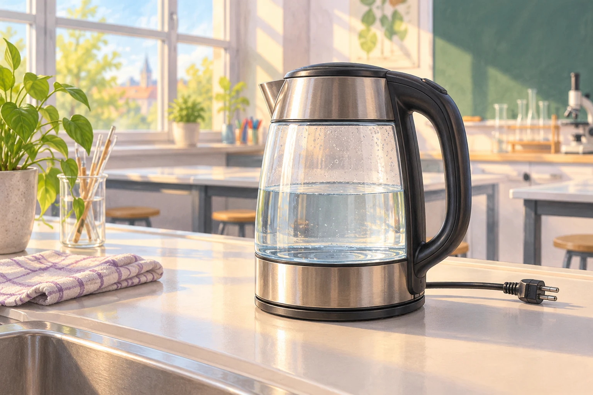

Im Fachraum sollen 0,5 Liter Wasser im Wasserkocher von 20 °C auf 80 °C erwärmt werden. Wie viel Wärmeenergie benötigt das Wasser dafür ungefähr?

Fermi-Aufgabe 1 · Klasse 5/6
Im Fachraum sollen 0,5 Liter Wasser im Wasserkocher von 20 °C auf 80 °C erwärmt werden. Wie viel Wärmeenergie benötigt das Wasser dafür ungefähr?

Findet eine mögliche Antwort und entwickelt dazu euren eigenen Lösungsweg.